Fixed slotBun
Count, then go to the next full slot
Buns sit in known slots, so there is nothing to search for. The main node counts the orders served and sends the arm to the next slot that still holds a bun.
Input: order count
R-BIZ Challenge 2024 · Zeus Robot Mission Challenge · Free mission
One robot arm builds a burger, layer by layer, from a line of ingredient pans. It looks into each stainless pan before every pick, chooses a grasp that suits the ingredient, and switches between cooking tools that lock onto its gripper with magnets.
Approach
A burger is a short run of very different grasps. Instead of one general grasp, the platform gives each kind of ingredient its own strategy and its own tool.
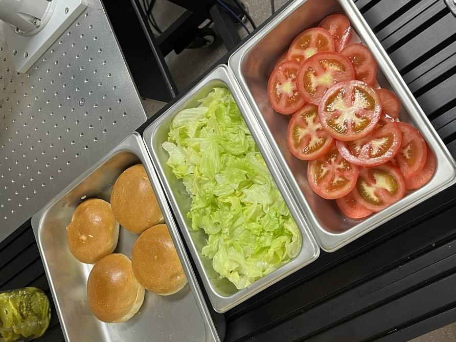
Buns sit in known slots, so there is nothing to search for. The main node counts the orders served and sends the arm to the next slot that still holds a bun.
Input: order count
Shredded ingredients have no single object to detect. The pan is split into four zones and the arm scoops from the zone with the lowest mean depth, which is the highest pile. The scoop height also follows that depth, so each portion comes out about the same size.
Input: depth image
YOLOv8 finds every piece and depth picks the one on top. The grip point is chosen for clearance, so a slice can be taken from anywhere in the pan.
Input: RGB + depth
A pressure-type dispenser mounted on the sauce bottle applies the sauce.
Input: none
System
The main node tracks what has been served, decides which ingredient goes next, and chooses the grasp and tool for it. A separate control node turns that decision into arm motion.
Perception
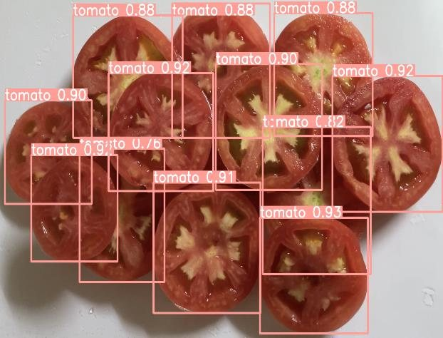
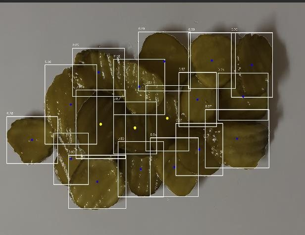
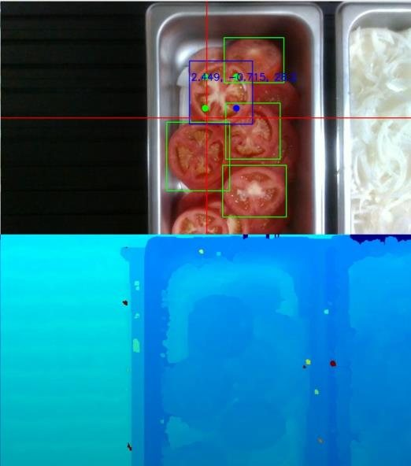
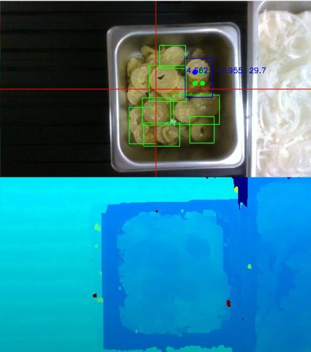
Values below are the mean depths the vision node logged for each zone. Switch pans to compare.
A lower value means the surface is closer to the camera, so that zone holds the most ingredient and is scooped first.
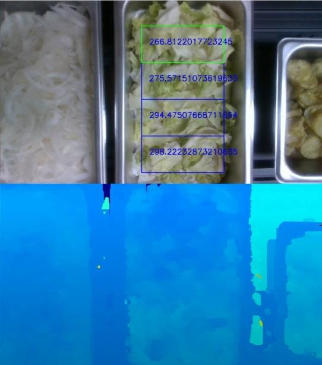
Hardware
The competition arm came with a single stock gripper. Rather than add actuators, we made the gripper drive the tools. Each cooking tool shares one coupling standard, neodymium magnets keep it seated, and the gripper's open-close stroke works the tool. A stand holds the tools between picks.
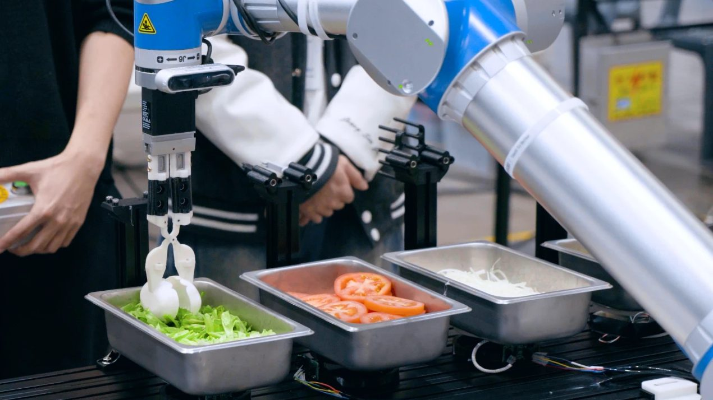
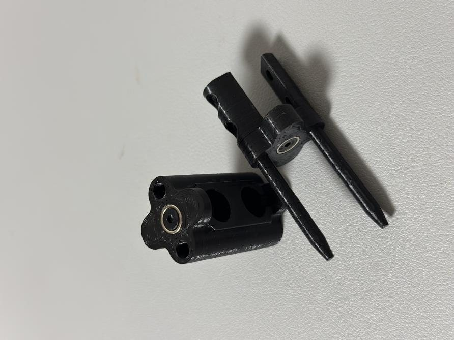
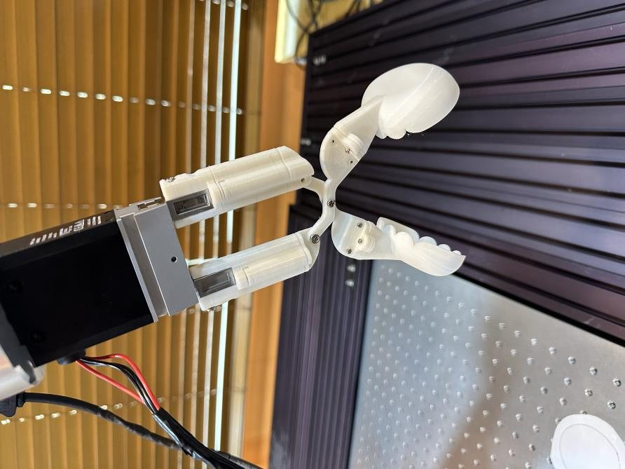
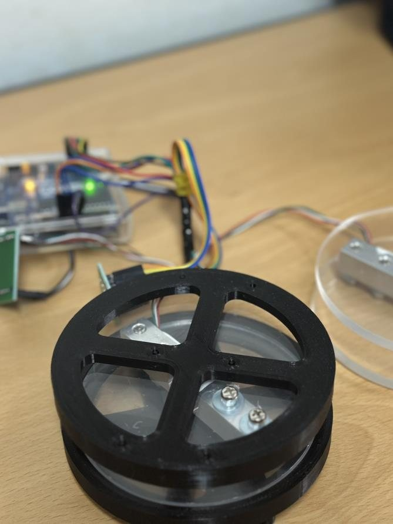
Recognition & media
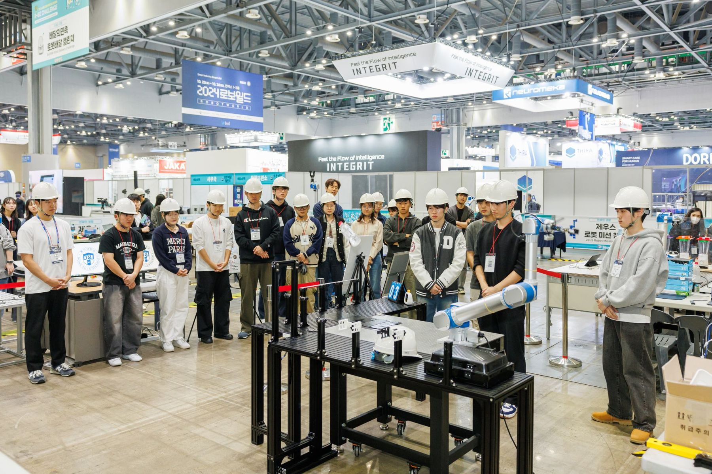
Director General Award, Korean Agency for Technology and Standards (KATS)
Third place in the Zeus Robot Mission Challenge at R-BIZ Challenge 2024, RoboWorld 2024, KINTEX. The hamburger platform was the team's free-mission entry.